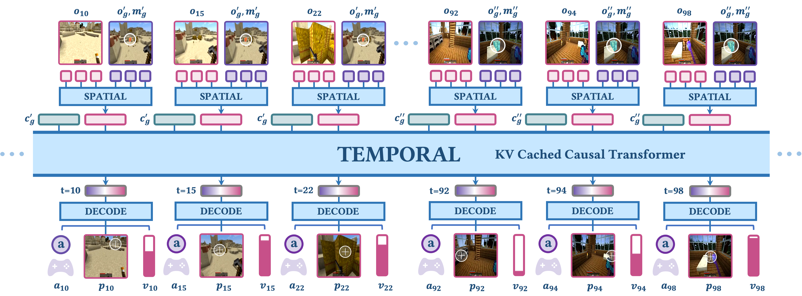
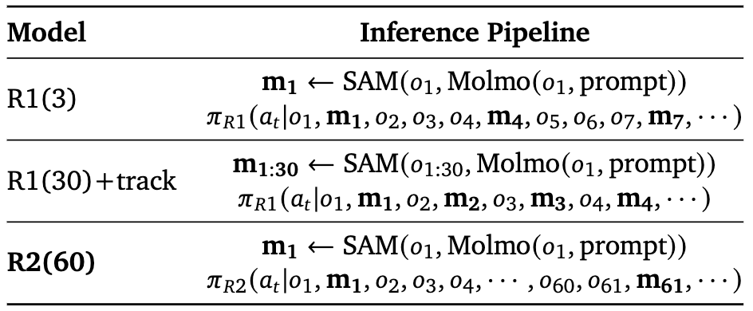
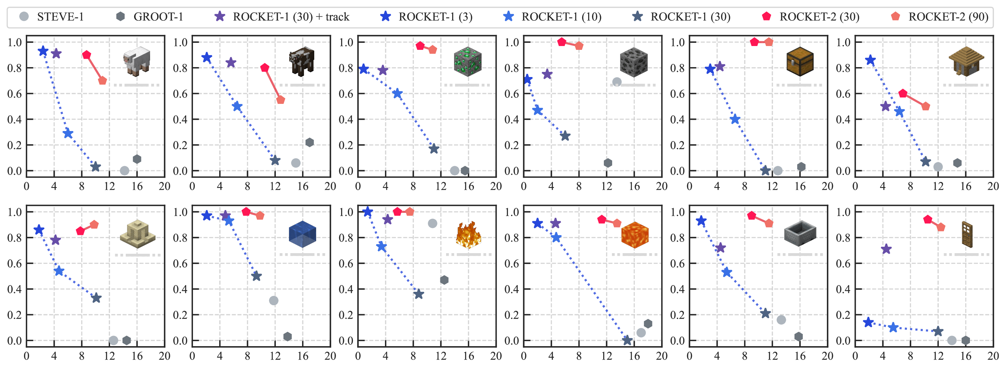
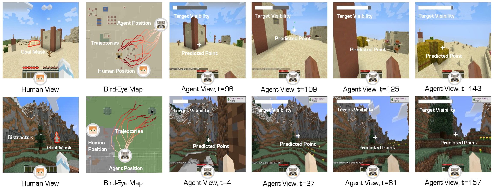
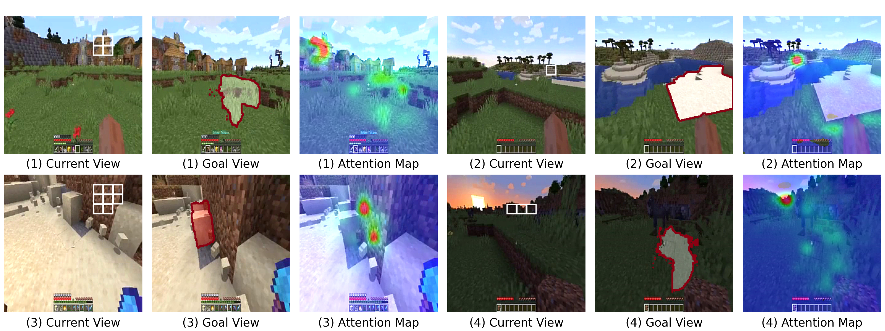
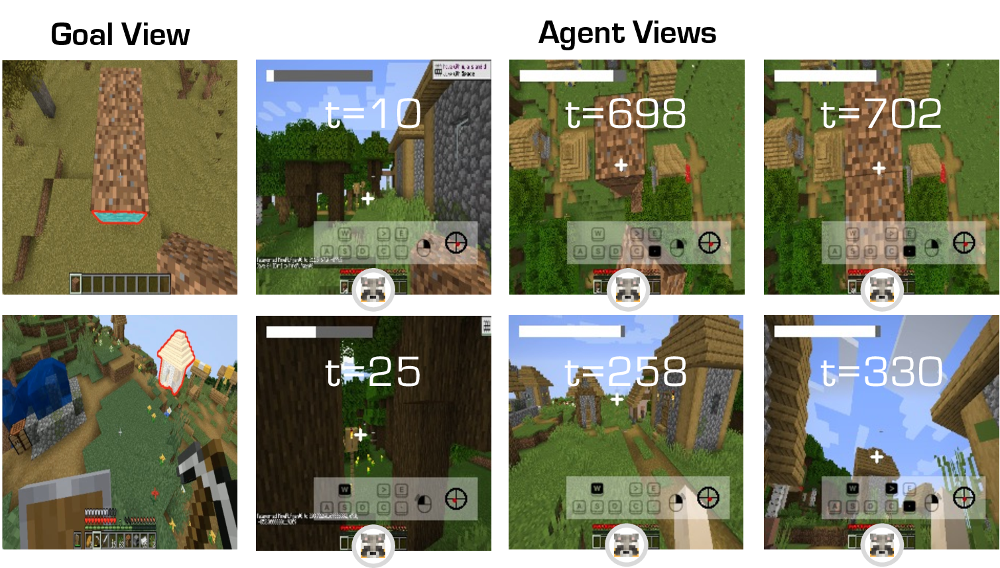

Steering Visuomotor Policy via Cross-View Goal Alignment
Introducing ROCKET-2, a state-of-the-art agent trained in Minecraft.
Our contributions are threefold:
User-friendly Interface: We introduce a user-friendly interface that allows humans to specify goals using segmentation masks
from their camera view.
Agent Design: We propose cross-view consistency loss and target visibility loss to explicitly enhance the agent’s ability.
Experiment Results: ROCKET-2 achieves an improvement
in the efficiency of inference 3x to 6x while maintaining the same level of performance as the previous state-of-the-art agent.
Playing with ROCKET-2 on Gradio by specifying the target object from your own camera view.
We aim to develop a goal specification method that is semantically clear, spatially sensitive, and intuitive
for human users to guide agent interactions in embodied environments.
To this end,we develop ROCKET-2, a state-of-the-art agent trained in Minecraft, achieving an improvement
in the efficiency of inference 3x to 6x. We show ROCKET-2 can directly interpret goals from human
camera views for the first time, paving the way for better human-agent interaction.
Our contributions are threefold:
User-friendly Interface: We introduce a user-friendly interface that allows humans to specify goals using segmentation masks from their camera view.
Agent Design: We propose cross-view consistency loss and target visibility loss to explicitly enhance the agent’s ability.
Experiment Results: ROCKET-2 achieves an improvement in the efficiency of inference 3x to 6x while maintaining the same level of performance as the previous state-of-the-art agent.
Our goal is to learn a
goal-conditioned visuomotor policy, which allows humans to specify goal objects for interaction using semantic
segmentation across camera views. Formally, we aim to learn a policy
\( \pi_{cross}(a_t \mid o_{1:t}, \{o_g, m_g\}, c_g) \), where \( a_t \) represents the
action at time \( t \), \( c_g \) denotes the type of interaction.
To train such visuomotor policy, we assume access to a dataset
\(D_{cross} = \{c^n, (o_t^n, a_t^n, o_g^n, m_g^n)_{t=1}^{L(n)}\}_{n=1}^{N}\) consisting of \(N\) successful demonstration episodes,
where \(L(n)\) is the length of episode \(n\).
Within each episode, if \(m_t\) is non-empty, all \((o_t , m_t)\) pairs indicate the
same object. Consequently, we can arbitrarily pick one observation frame as the goal view condition for the entire trajectory.
Agent Design
ROCKET-2 Architecture.ROCKET-2 consists of three parts: (1) a non-causal
transformer for spatial fusion, which establishes the
relationship between
the agent’s and human’s camera views; (2) a causal transformer for temporal fusion, ensuring consistency for goal
tracking; (3) a decoder module, made of a feedforward neural network (FFN), which predicts goal-related visuals cues
and
actions.

Figure 1. ROCKET-2 Architecture.
Cross-View Dataset Generation.
We employ
the backward trajectory relabeling technique proposed in to automate the annotation of the OpenAI
Contractor Dataset .
For each episode, we randomly sample a frame from the trajectory as the goal view and use the segmentation mask of the goal object as the goal mask.
Cross-View Consistency Loss.
We observe that relying solely on behavior cloning loss is insufficient.
Therefore, we propose a cross-view consistency loss.
Conditioned on the segmentation from one camera view, the model is trained to generate the segmentation for another camera view
Target Visibility Loss.
Due to the partial observability in 3D environments, it is common for
target objects in interaction trajectories to disappear from the field of view and reappear later.
We propose training the model to predict
whether the target object is currently visible.
Comparison to ROCKET-1
Automated evaluation of ROCKETs relies on Molmo and
SAM to generate a segmentation mask for the target object in the given views.
ROCKET-1 (R1) requires object masks for all agent observations, whereas ROCKET-2 (R2) only
needs one or a few object masks. While increasing interaction frequency with Molmo improves ROCKET-1's performance,
it suffers from high inference time.

Figure 2. ROCKET-Series Inference Pipeline Details.
Molmo can pinpoint the target object based on the task
prompt. SAM uses the point to generate object mask
\(m_t\) w.r.t. \(o_t\) and supports real-time object tracking.
Experiment Results
Performance-Efficiency Comparison on the Minecraft Interaction Benchmark.
We demonstrate that ROCKET-2 significantly improves inference speed while maintaining high
interaction success. Following , we evaluate the agent's performance on the Minecraft Interaction Benchmark.

Figure 3. Performance-Efficiency Comparison on the Minecraft Interaction Benchmark. The x-axis represents inference speed (FPS), and the y-axis shows the interaction success rate. Numbers in parentheses
indicate the Molmo invocation interval, where larger values mean higher FPS. “+ track” denotes real-time
SAM-2 segmentation between Molmo calls, increasing inference time (applicable only to ROCKET-1). In most
cases, ROCKET-2 achieves 3x to 6x faster while matching or surpassing ROCKET-1’s peak performance.
Case Study of Human-Agent Interaction.
We present two case studies illustrating ROCKET-2 interprets human intent under
the cross-view goal specification interface.

Figure 4. Case Study of Human-Agent Interaction.
We demonstrate how a human interacts with ROCKET-2,
leveraging its spatial reasoning abilities. (Top Row) The human specifies a hay bale that is not visible
to ROCKET-2. By exploring the area around the visible landmark (house), ROCKET-2 successfully locates
the goal. (Bottom Row) The human specifies a target tree in the presence of a tree distractor. ROCKET-2
accurately identifies the correct tree by reasoning about spatial relationships and landmarks. The agent’s
trajectories are visualized in bird’s-eye view maps.
Visualization Analysis of Cross-View Alignment.
Prominent non-goal objects, referred to as “landmarks”, play a crucial role in assisting humans or
agents in localizing goal objects within a scene.
We prepare a current view observation and a third view with goal segmentation and inspect the softmax-normalized attention map of the first self-attention layer in the
spatial transformer.
This map is overlaid on the third
view (goal view) to reflect its responsiveness to
patch \(i\) in the current view.
Our findings reveal that ROCKET-2 effectively matches
cross-view consistency even under significant geometric deformations and distance variations.

Figure 5. Visualization Analysis of Cross-View Alignment.
The vision patches (identified by white grid) represent a chosen background landmark in the agent’s current view
(instead of the goal object). We generated an attention map with the spatial fusion transformer using these
patches as queries and the goal view patches as keys and values. We found that ROCKET-2 perfectly aligned with
the selected landmarks across views.
Cross-Episode Generalization.
We observe that ROCKET-2 exhibits crossepisode generalization capabilities.
As shown in Figure 6, he selected goal views come from different episodes, each generated with a unique
world seed.

Figure 6. Cross-Episode Generalization.
The goal view does not exist within the agent’s world but originates from a different episode. We observe that the
agent attempts to infer the semantic information underlying the goal specification.
Conclusion
To improve human-agent interaction in embodied worlds, we propose a cross-view goal specification approach. Since
behavior cloning alone
fails to align the agent with human views, we
introduce cross-view consistency and target visibility losses to enhance alignment. ROCKET2 achieves state-of-the-art
performance on the
Minecraft Interaction Benchmark with a 3x to 6x
efficiency boost. Visualizations and case studies validate our method.
BibTeX
@misc{cai2025rocket2,
title={ROCKET-2: Steering Visuomotor Policy via Cross-View Goal Alignment},
author={Shaofei Cai and Zhancun Mu and Anji Liu and Yitao Liang},
year={2025},
eprint={2503.02505},
archivePrefix={arXiv},
primaryClass={cs.AI},
url={https://arxiv.org/abs/2503.02505},
}